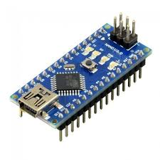

-
Arduino Nano

O Arduino Nano é a versão menor e mais completa das placas de microcontrolador (ATmega), é uma versão para ser inserida a um protoboard com uma porta USB acoplada
Programação: A Placa Nano pode ser programada com o software do Arduino (download). Para detalhes, veja a referência e os tutoriais. O ATmega168 na Placa Nano vem com o bootloader pré gravado o possibilita o envio de novos códigos sem o uso de um programador de hardware externo. Ele se comunica usando o protocolo original STK500 (reference, C header files). Você também pode ignorar o bootloader e programar o microcontrolador através de um conector header ICSP (In-Circuit Serial Programming); veja estas instruções para mais detalhes.
-
Arduino Mega

A placa Arduino MEGA 2560 é uma ótima opção para expandir seus projetos, quando há a necessidade de mais pinos ou quantidade de memória FLASH. Possui desempenho parecido com a placa Arduino UNO, porém possibilitando maior quantidades de recursos, como mais entradas analógicas e saídas PWM
O Arduino Mega 2560 - Compatível é ideal para seus projetos mais complexos, recomendada para impressora 3D e aplicações robóticas. Possui 54 pinos de entradas/saídas digitais e 16 entradas analógicas, essa placa substitui a antiga placa Mega 2560 com funções melhoradas. Tenha mais espaço e oportunidades com Arduino Mega!